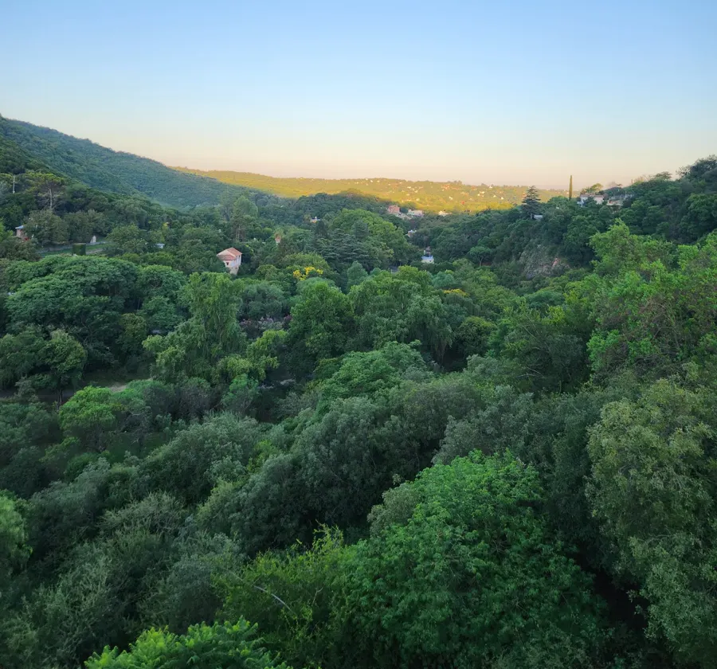
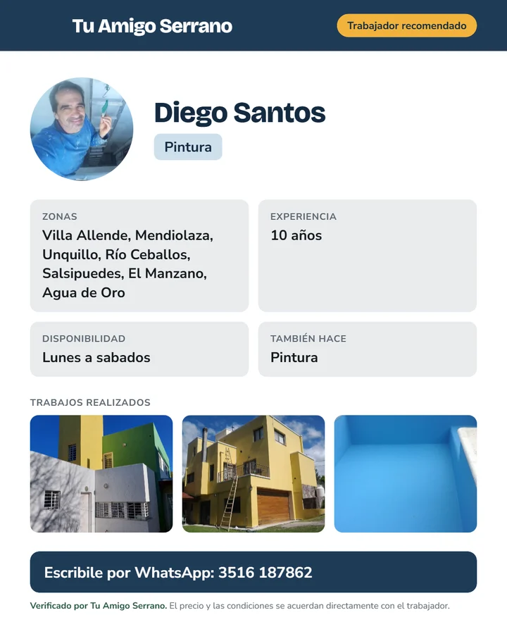

Sierras Chicas · Córdoba
Jardineros, albañiles, pintores y técnicos recomendados por tus vecinos
Contanos por WhatsApp qué trabajo o arreglo necesitás y te pasamos trabajadores y técnicos de tu zona. Gratis y sin comisión.
Sin apps ni registros. Te responde una persona.


Cómo funciona
-
Escribinos
Contanos qué trabajo o arreglo necesitás, en qué localidad y para cuándo. Si podés, mandá una foto.
-
Te recomendamos
Te pasamos 2 o 3 trabajadores o técnicos de tu zona con su ficha y su WhatsApp.
-
Arreglás directo
Hablás con quien elijas y acuerdan precio y día. Después nos contás cómo te fue.
¿Qué necesitás?
Casa y terreno
- Pintura
- Jardinería
- Albañilería
- Poda y extracción de árboles
- Desmalezado y limpieza de terrenos
- Plomería
- Electricidad
- Gas
Reparación técnica
- Lavarropas
- Heladeras
- Aire acondicionado
- Computadoras y notebooks
- Televisores
Hogar y servicios
- Limpieza de casas
- Fletes y mudanzas
¡Y mucho más! Herrería, carpintería, cerrajería, celulares, alarmas, portones… ¿No lo ves? Preguntanos
Por qué Tu Amigo Serrano
-
Gratis y sin comisión
No le cobramos nada al vecino ni al trabajador. El precio lo arreglan entre ustedes.
-
Recomendados de verdad
Antes de sumar a un trabajador hablamos con él y con un cliente que lo recomienda.
-
De tu zona
Trabajadores que viven y trabajan en las Sierras Chicas.
-
Todo por WhatsApp
Sin apps ni formularios: lo usás como cualquier chat.
Dónde estamos
Once pueblos al pie de las Sierras Chicas. Elegí el tuyo y pedí un trabajador ahí.
-
Tramo Norte
-
Tramo Centro
-
Tramo Sur
¿Estás cerca y no ves tu localidad? Escribinos igual.
¿Trabajás en un oficio? Sumate gratis
¿Arreglás aparatos o hacés trabajos en la casa? Recibí pedidos de vecinos de tu zona, sin pagar comisión. Completás un formulario corto y te escribimos por WhatsApp.
Quiero sumarme-
Trabajo cerca de casa
Te pasamos pedidos de vecinos de los pueblos donde trabajás, y te escriben directo a tu WhatsApp.
-
Por recomendación
Cuanto mejor trabajás, más te recomiendan los vecinos.
-
Una charla corta
Antes de empezar hablamos 15 minutos para conocerte.
Preguntas frecuentes
¿Cuánto cuesta?
Nada. Tu Amigo Serrano es gratis para vecinos y trabajadores.
¿Ustedes hacen el trabajo?
No. Te conectamos con trabajadores independientes. El precio, las condiciones y la garantía los acordás directo con ellos.
¿Cómo saben que son de confianza?
Hablamos con cada trabajador, le pedimos fotos de sus trabajos y llamamos a un cliente que lo recomienda. Después de cada trabajo, los vecinos lo califican.
¿Cuánto tardan en responder?
Te contesta una persona lo antes posible, en general en el día.